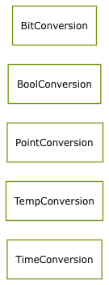

Package com.sekati.convert
Class Summary
BitConversion
Bit Conversion Utilites
BoolConversion
Boolean Conversion utilities
PointConversion
Point Conversion utilities
TempConversion
Temperature Conversion utilities
TimeConversion
Time Conversion Utilities
Class Inheritance Diagram

Overview
Package
Class
Source
Index